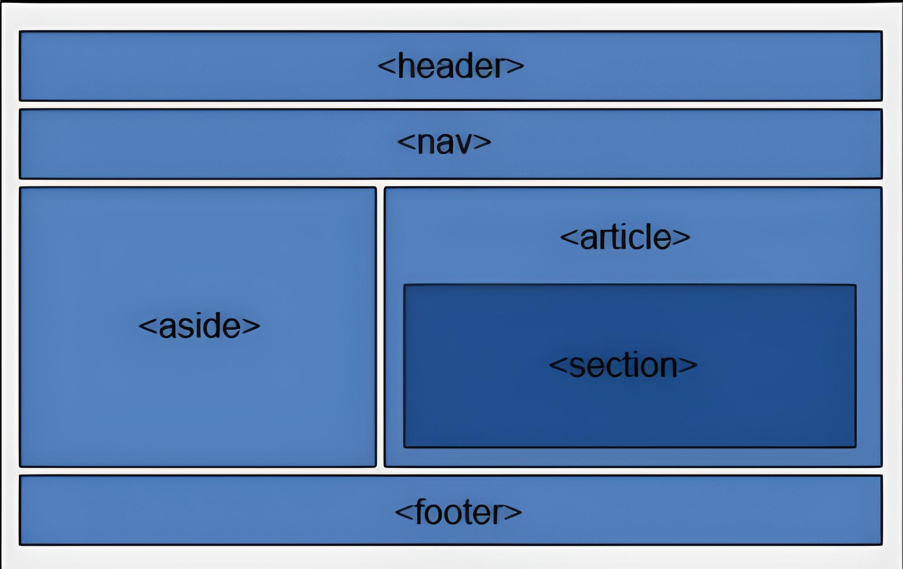

Что такое HTML?

Логотип
HTML (HyperText Markup Language — «язык гипертекстовой разметки») — самый базовый строительный блок Веба. Он определяет содержание и структуру веб-контента.
HTML – это язык разметки. Вы используете HTML для разметки текстового документа, точно так же, как это делает редактор при помощи жирного красного карандаша. Эти пометки служат для определения формата (или стиля), который будет использован при выводе текста на экран монитора.
Под гипертекстом понимаются ссылки, которые соединяют веб-страницы друг с другом либо в пределах одного веб-сайта, либо между веб-сайтами. Ссылки являются фундаментальным аспектом Веба. Загружая контент в Интернет и связывая его со страницами, созданными другими людьми, вы становитесь активным участником Всемирной паутины.
Возможности
При помощи HTML можно создавать отдельные элементы, а в дальнейшем компоновать их между собой. HTML позволяет:
- Формировать текстовые блоки
- Выделять абзацы
- Организовывать и создавать любые таблицы и списки
- Есть возможность управлять цветовым оформлением документов
- Добавлять на сайт звуки, анимацию, картинки
- Помогает организовывать связь документов, разделов и страниц сайта между собой посредством гиперссылок

Фрагмент html кода
Директивы HTML называются не командами, процедурами или операторами, как в большинстве языков, а гордо носят собственное наименование — тэги (от английского слова tag — отметка).
Главный недостаток HTML — отсутствие средств, при помощи которых было бы возможно контролировать просмотр web-страниц независимо от пользователя. Web-мастер подготавливает страницу под какие-то определенные параметры, разрешение монитора, вид браузера и т.д. Пользователь же, изменив эти параметры у себя на компьютере, может получить на выходе страницу, существенно отличающуюся от замыслов программиста.
Структура
В дополнение к определению отдельных частей вашей страницы (таких как «абзац» или «изображение»), HTML также содержит ряд элементов блочного уровня, используемых для определения областей вашего веб-сайта (такие как «заголовок», «навигационное меню», «колонка основного содержимого»).
Структура html документа
Веб-страницы могут и будут отличаться друг от друга, но все они, преимущественно, состоят из аналогичных стандартных компонентов, если только страница не отображает полноэкранное видео или игру, не является частью какого-либо художественного проекта или просто плохо структурирована:
- Заголовок (колонтитул)
- Навигационное меню
- Основное содержимое
- Боковая панель
- Нижний колонтитул (футер)